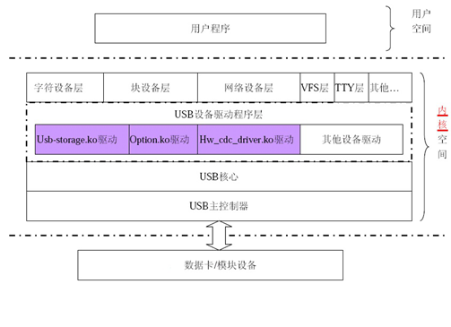
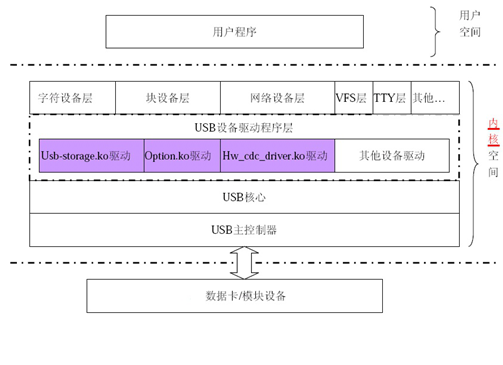
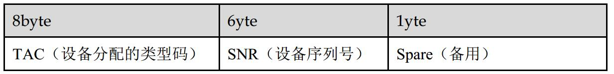

一、概述
本文档主要面向使用鼎桥EM350数据卡的Linux和Android第三方用户做驱动集成使用
对于鼎桥EM350数据卡来说，与第三方Linux或Android设备连接时，其接口上报的类型为USB复合设备接口，因此第三方设备必须支持如下的USB驱动框架

其中hw_cdc_driver是USB网卡设备驱动，该驱动目前还没有发布到Linux版本中，usb-storge和option串口驱动已经可以在Linux发布的版本中找到
二、集成所需文件说明
三、驱动集成
涉及的内核源代码有：
drivers\usb\storage\initializers.c
drivers\usb\storage\initializers.h
drivers\usb\storage\unusual_devs.h
1、修改initializers.c
在文件最后增加usb_stor_huawei_init和usb_stor_huawei_scsi_init这两个函数的定义

2、修改initializers.h
在文件最后增加usb_stor_huawei_init和usb_stor_huawei_scsi_init这两个函数
的声明

3、修改unusual_devs.h
增加如下两个结构
UNUSUAL_DEV_HW( 0x12d1, 0x1c1b, 0x0001, 0x0001,0x08,
"HUAWEI",
"HUAWEI MOBILE Mass Storage",
US_SC_DEVICE, US_PR_DEVICE, usb_stor_huawei_scsi_init,
0 ),
UNUSUAL_DEV_HW( 0x12d1, 0x1c1b, 0x0102, 0x0102,0x08,
"HUAWEI",
"HUAWEI MOBILE Mass Storage",
US_SC_DEVICE, US_PR_DEVICE, usb_stor_huawei_scsi_init,
0 ),
UNUSUAL_DEV_HW( 0x12d1, 0x14fe, 0x0001, 0x0001,0x08,
"HUAWEI",
"HUAWEI MOBILE Mass Storage",
US_SC_DEVICE, US_PR_DEVICE, usb_stor_huawei_scsi_init,0),
UNUSUAL_DEV_HW( 0x12d1, 0x14fe, 0x0102, 0x0102,0x08,
"HUAWEI",
"HUAWEI MOBILE Mass Storage",
US_SC_DEVICE, US_PR_DEVICE, usb_stor_huawei_scsi_init,
0 ),
4、修改USB.c
在static struct us_unusual_dev us_unusual_dev_list[]上面增加
#undef UNUSUAL_DEV_HW
#define UNUSUAL_DEV_HW(id_vendor, id_product, bcdDeviceMin, bcdDeviceMax, \
bInterfaceClass, vendor_Name, product_Name, use_Protocol, use_Transport, \
init_Function, flags) \
{ \
.vendorName = vendor_Name, \
.productName = product_Name, \
.useProtocol = use_Protocol, \
.useTransport = use_Transport, \
.initFunction = init_Function, \
}
在static struct us_unusual_dev us_unusual_dev_list[]里面增加
# undef UNUSUAL_DEV_HW
5、修改usual_tables.c
在#define USUAL_DEV(useProto, useTrans, useType) \
{ USB_INTERFACE_INFO(USB_CLASS_MASS_STORAGE, useProto, useTrans), \
.driver_info = (USB_US_TYPE_STOR<<24) }
下面增加
#define UNUSUAL_DEV_HW(id_vendor, id_product, bcdDeviceMin, bcdDeviceMax, \
bIntClass, vendorName, productName, useProtocol, useTransport, \
initFunction, flags) \
{ .match_flags = (USB_DEVICE_ID_MATCH_DEVICE_AND_VERSION | USB_DEVICE_ID_MATCH_INT_CLASS), \
.idVendor = (id_vendor), .idProduct = (id_product), \
.bcdDevice_lo = (bcdDeviceMin), .bcdDevice_hi = (bcdDeviceMax), \
.bInterfaceClass = (bIntClass), \
.driver_info = (flags)|(1<<24)}
6、USB 串口驱动的集成
涉及的内核源代码有：
drivers\usb\serial\option.c
在product_id的宏定义中增加
#define HUAWEI_PRODUCT_E1506 0x1506
#define HUAWEI_PRODUCT_E1C05 0x1C05
在option_ids[]数组中增加
{ USB_DEVICE(HUAWEI_VENDOR_ID, HUAWEI_PRODUCT_E1506) },
{ USB_DEVICE(HUAWEI_VENDOR_ID, HUAWEI_PRODUCT_E1C05) },
7、USB NDIS网卡驱动的集成
7.1、将NDIS网卡驱动程序hw_cdc_driver.c拷贝到内核源代码drivers\net\usb\目录下。
因为我们是2.6.37的内核版本。会出现重复定义问题,
7.1.1在hw_cdc_driver.c中的#include<liux/unaligned/access_ok.h>与include<liux/unaligned/le_byteshift.h>中重负定义。
因为在该.c中包含的#include<linux/etherdevice.h>中包含#include<asm/unaligned.h>下包含#unclude<liux/unaligned/le_byteshift.h>.
7.2、编辑drivers\net\usb\下的Kconfig文件，在下图所示位置增加config USB_NET_HW_CDC_DRIVER的配置内容 

在没有更改之前执行一些up和获取ip命令时出现如下错误 permission denied,更改后没有错误


更改后的正确现象

2、在执行自动获取ip地址时候出现如下错误
route:SIOCDELRT:no such process
解决办法是 我在/etc/udhcpc.d/S50default中加 metric =0,

3,现在现象时别人能ping通我们，我ping不通他们，在执行ping命令时出现如下错误

4 开两个窗口一个使用ping命令一个使用tcpdump -i hed0
或者一个窗口ping命令后台运行，在运行tcpdump命令得到的结果是能够收到回复的包。
可以执行呼叫的AT指令AT^CAPTTD若呼通网络连接.
本文档主要面向使用鼎桥EM350数据卡的Linux和Android第三方用户做驱动集成使用
对于鼎桥EM350数据卡来说，与第三方Linux或Android设备连接时，其接口上报的类型为USB复合设备接口，因此第三方设备必须支持如下的USB驱动框架

其中hw_cdc_driver是USB网卡设备驱动，该驱动目前还没有发布到Linux版本中，usb-storge和option串口驱动已经可以在Linux发布的版本中找到
二、集成所需文件说明
文件名 | 文件说明 |
hw_cdc_driver.c | USB NDIS网卡驱动程序 |
initializers.c | USB mass storage的初始化文件 |
initializers.h | initializers.c的头文件 |
option.c | USB serial驱动程序 |
unusual_devs.h | USB设备非常用的id_table |
usb.c | USB mass storage驱动 |
三、驱动集成
涉及的内核源代码有：
drivers\usb\storage\initializers.c
drivers\usb\storage\initializers.h
drivers\usb\storage\unusual_devs.h
drivers\usb\storage\usb.c
driver\usb\storage\usual_tables.c
具体的修改步骤如下：1、修改initializers.c
在文件最后增加usb_stor_huawei_init和usb_stor_huawei_scsi_init这两个函数的定义
2、修改initializers.h
在文件最后增加usb_stor_huawei_init和usb_stor_huawei_scsi_init这两个函数
的声明
3、修改unusual_devs.h
增加如下两个结构
UNUSUAL_DEV_HW( 0x12d1, 0x1c1b, 0x0001, 0x0001,0x08,
"HUAWEI",
"HUAWEI MOBILE Mass Storage",
US_SC_DEVICE, US_PR_DEVICE, usb_stor_huawei_scsi_init,
0 ),
UNUSUAL_DEV_HW( 0x12d1, 0x1c1b, 0x0102, 0x0102,0x08,
"HUAWEI",
"HUAWEI MOBILE Mass Storage",
US_SC_DEVICE, US_PR_DEVICE, usb_stor_huawei_scsi_init,
0 ),
UNUSUAL_DEV_HW( 0x12d1, 0x14fe, 0x0001, 0x0001,0x08,
"HUAWEI",
"HUAWEI MOBILE Mass Storage",
US_SC_DEVICE, US_PR_DEVICE, usb_stor_huawei_scsi_init,0),
UNUSUAL_DEV_HW( 0x12d1, 0x14fe, 0x0102, 0x0102,0x08,
"HUAWEI",
"HUAWEI MOBILE Mass Storage",
US_SC_DEVICE, US_PR_DEVICE, usb_stor_huawei_scsi_init,
0 ),
4、修改USB.c
在static struct us_unusual_dev us_unusual_dev_list[]上面增加
#undef UNUSUAL_DEV_HW
#define UNUSUAL_DEV_HW(id_vendor, id_product, bcdDeviceMin, bcdDeviceMax, \
bInterfaceClass, vendor_Name, product_Name, use_Protocol, use_Transport, \
init_Function, flags) \
{ \
.vendorName = vendor_Name, \
.productName = product_Name, \
.useProtocol = use_Protocol, \
.useTransport = use_Transport, \
.initFunction = init_Function, \
}
在static struct us_unusual_dev us_unusual_dev_list[]里面增加
# undef UNUSUAL_DEV_HW
5、修改usual_tables.c
在#define USUAL_DEV(useProto, useTrans, useType) \
{ USB_INTERFACE_INFO(USB_CLASS_MASS_STORAGE, useProto, useTrans), \
.driver_info = (USB_US_TYPE_STOR<<24) }
下面增加
#define UNUSUAL_DEV_HW(id_vendor, id_product, bcdDeviceMin, bcdDeviceMax, \
bIntClass, vendorName, productName, useProtocol, useTransport, \
initFunction, flags) \
{ .match_flags = (USB_DEVICE_ID_MATCH_DEVICE_AND_VERSION | USB_DEVICE_ID_MATCH_INT_CLASS), \
.idVendor = (id_vendor), .idProduct = (id_product), \
.bcdDevice_lo = (bcdDeviceMin), .bcdDevice_hi = (bcdDeviceMax), \
.bInterfaceClass = (bIntClass), \
.driver_info = (flags)|(1<<24)}
6、USB 串口驱动的集成
涉及的内核源代码有：
drivers\usb\serial\option.c
在product_id的宏定义中增加
#define HUAWEI_PRODUCT_E1506 0x1506
#define HUAWEI_PRODUCT_E1C05 0x1C05
在option_ids[]数组中增加
{ USB_DEVICE(HUAWEI_VENDOR_ID, HUAWEI_PRODUCT_E1506) },
{ USB_DEVICE(HUAWEI_VENDOR_ID, HUAWEI_PRODUCT_E1C05) },
7、USB NDIS网卡驱动的集成
7.1、将NDIS网卡驱动程序hw_cdc_driver.c拷贝到内核源代码drivers\net\usb\目录下。
因为我们是2.6.37的内核版本。会出现重复定义问题,
7.1.1在hw_cdc_driver.c中的#include<liux/unaligned/access_ok.h>与include<liux/unaligned/le_byteshift.h>中重负定义。
因为在该.c中包含的#include<linux/etherdevice.h>中包含#include<asm/unaligned.h>下包含#unclude<liux/unaligned/le_byteshift.h>.
将access_ok.h屏蔽
7.1.2 因为2.6.37版本的内核不带ncm.h所以要屏蔽,ncm.h中的内容在cdc.h已经包含
将#if LINUX_ERSION_CODE >= KERNEL_VERSION(2.6.35)
#include<linux/usb/ncm.h>
改为#if LINUX_ERSION_CODE <= KERNEL_VERSION(2.6.35)
#include<linux/usb/ncm.h>
将linux/usb/cdc.h中和hw_cdc_driver.c重复定义的屏蔽
7.1.2 因为2.6.37版本的内核不带ncm.h所以要屏蔽,ncm.h中的内容在cdc.h已经包含
将#if LINUX_ERSION_CODE >= KERNEL_VERSION(2.6.35)
#include<linux/usb/ncm.h>
改为#if LINUX_ERSION_CODE <= KERNEL_VERSION(2.6.35)
#include<linux/usb/ncm.h>
将linux/usb/cdc.h中和hw_cdc_driver.c重复定义的屏蔽
7.2、编辑drivers\net\usb\下的Kconfig文件，在下图所示位置增加config USB_NET_HW_CDC_DRIVER的配置内容
7.3、编辑drivers\net\usb\目录下的Makefile文件，增加如图所示内容

7.4、在文件系统根目录下执行make menuconfig
7.5、按照下图顺序选择菜单Device Drivers>Network device support>USB Network Adapters


7. 6、保存退出，然后编译整个内核
8测试驱动
利用我们提供的串口应用程序，对虚拟出来的USB串口和网口进行测试。
首先要将comtest.c和main.c分别编译成可执行文件comtest和attest，放到根文件系统的bin路径下。
当系统启动时显示

在shell下执行cat /proc/bus/usb/devices，显示：
T: Bus=02 Lev=00 Prnt=00 Port=00 Cnt=00 Dev#= 1 Spd=12 MxCh= 2
B: Alloc= 0/900 us ( 0%), #Int= 0, #Iso= 0
D: Ver= 1.10 Cls=09(hub ) Sub=00 Prot=00 MxPS=64 #Cfgs= 1
P: Vendor=0000 ProdID=0000 Rev= 2.06
S: Manufacturer=Linux 2.6.21.5 ohci_hcd
S: Product=OHCI Host Controller
S: SerialNumber=0000:00:04.0
C:* #Ifs= 1 Cfg#= 1 Atr=e0 MxPwr= 0mA
I:* If#= 0 Alt= 0 #EPs= 1 Cls=09(hub ) Sub=00 Prot=00 Driver=hub
E: Ad=81(I) Atr=03(Int.) MxPS= 2 Ivl=255ms
T: Bus=01 Lev=00 Prnt=00 Port=00 Cnt=00 Dev#= 1 Spd=480 MxCh= 2
B: Alloc= 0/800 us ( 0%), #Int= 2, #Iso= 0
D: Ver= 2.00 Cls=09(hub ) Sub=00 Prot=01 MxPS=64 #Cfgs= 1
P: Vendor=0000 ProdID=0000 Rev= 2.06
S: Manufacturer=Linux 2.6.21.5 ehci_hcd
S: Product=EHCI Host Controller
S: SerialNumber=0000:00:04.1
C:* #Ifs= 1 Cfg#= 1 Atr=e0 MxPwr= 0mA
I:* If#= 0 Alt= 0 #EPs= 1 Cls=09(hub ) Sub=00 Prot=00 Driver=hub
E: Ad=81(I) Atr=03(Int.) MxPS= 4 Ivl=256ms
T: Bus=01 Lev=01 Prnt=01 Port=00 Cnt=01 Dev#= 2 Spd=480 MxCh= 4
D: Ver= 2.00 Cls=09(hub ) Sub=00 Prot=02 MxPS=64 #Cfgs= 1
P: Vendor=0424 ProdID=2514 Rev= b.b3
C:* #Ifs= 1 Cfg#= 1 Atr=e0 MxPwr= 2mA
I: If#= 0 Alt= 0 #EPs= 1 Cls=09(hub ) Sub=00 Prot=01 Driver=hub
E: Ad=81(I) Atr=03(Int.) MxPS= 1 Ivl=256ms
I:* If#= 0 Alt= 1 #EPs= 1 Cls=09(hub ) Sub=00 Prot=02 Driver=hub
E: Ad=81(I) Atr=03(Int.) MxPS= 1 Ivl=256ms
T: Bus=01 Lev=02 Prnt=02 Port=00 Cnt=01 Dev#= 4 Spd=480 MxCh= 0
D: Ver= 2.00 Cls=00(>ifc ) Sub=00 Prot=00 MxPS=64 #Cfgs= 1
P: Vendor=12d1 ProdID=1506 Rev= 1.02
S: Manufacturer=HUAWEI Technology
S: Product=HUAWEI Mobile
C:* #Ifs= 9 Cfg#= 1 Atr=80 MxPwr=500mA
I:* If#= 0 Alt= 0 #EPs= 2 Cls=ff(vend.) Sub=02 Prot=14 Driver=option
E: Ad=81(I) Atr=02(Bulk) MxPS= 512 Ivl=0ms
E: Ad=01(O) Atr=02(Bulk) MxPS= 512 Ivl=4ms
I:* If#= 1 Alt= 0 #EPs= 2 Cls=ff(vend.) Sub=02 Prot=13 Driver=option
E: Ad=82(I) Atr=02(Bulk) MxPS= 512 Ivl=0ms
E: Ad=02(O) Atr=02(Bulk) MxPS= 512 Ivl=4ms
I:* If#= 2 Alt= 0 #EPs= 2 Cls=ff(vend.) Sub=02 Prot=12 Driver=option（这个就是ttyUSB2 也就是AT口）
E:E: Ad=03(O) Atr=02(Bulk) MxPS= 512 Ivl=4ms
I:* If#= 3 Alt= 0 #EPs= 2 Cls=ff(vend.) Sub=02 Prot=0a Driver=option
E: Ad=84(I) Atr=02(Bulk) MxPS= 512 Ivl=0ms
E: Ad=04(O) Atr=02(Bulk) MxPS= 512 Ivl=4ms
I:* If#= 4 Alt= 0 #EPs= 2 Cls=ff(vend.) Sub=02 Prot=03 Driver=option
E: Ad=85(I) Atr=02(Bulk) MxPS= 512 Ivl=0ms
E: Ad=05(O) Atr=02(Bulk) MxPS= 512 Ivl=4ms
I: If#= 5 Alt= 0 #EPs= 1 Cls=ff(vend.) Sub=02 Prot=16 Driver=huawei_ether
E: Ad=86(I) Atr=03(Int.) MxPS= 64 Ivl=2ms
I:* If#= 5 Alt= 1 #EPs= 3 Cls=ff(vend.) Sub=02 Prot=16 Driver=huawei_ether
E: Ad=86(I) Atr=03(Int.) MxPS= 64 Ivl=2ms
Ad=83(I) Atr=02(Bulk) MxPS= 512 Ivl=0ms
E: Ad=87(I) Atr=02(Bulk) MxPS= 512 Ivl=0ms
E: Ad=06(O) Atr=02(Bulk) MxPS= 512 Ivl=4ms
I:* If#= 6 Alt= 0 #EPs= 2 Cls=ff(vend.) Sub=02 Prot=05 Driver=option
E: Ad=88(I) Atr=02(Bulk) MxPS= 512 Ivl=0ms
E: Ad=07(O) Atr=02(Bulk) MxPS= 512 Ivl=4ms
I:* If#= 7 Alt= 0 #EPs= 2 Cls=08(stor.) Sub=06 Prot=50 Driver=usb-storage
E: Ad=08(O) Atr=02(Bulk) MxPS= 512 Ivl=0ms
E: Ad=89(I) Atr=02(Bulk) MxPS= 512 Ivl=0ms
I:* If#= 8 Alt= 0 #EPs= 2 Cls=08(stor.) Sub=06 Prot=50 Driver=usb-storage
E: Ad=09(O) Atr=02(Bulk) MxPS= 512 Ivl=0ms
E: Ad=8a(I) Atr=02(Bulk) MxPS= 512 Ivl=0ms
T: Bus=01 Lev=02 Prnt=02 Port=02 Cnt=02 Dev#= 3 Spd=480 MxCh= 0
D: Ver= 2.00 Cls=00(>ifc ) Sub=00 Prot=00 MxPS=64 #Cfgs= 1
P: Vendor=04b4 ProdID=4624 Rev= 0.19
S: Manufacturer=huawei
S: Product=nand-flash
S: SerialNumber=8CE45CDBDDBA2DE
C:* #Ifs= 1 Cfg#= 1 Atr=80 MxPwr=100mA
I:* If#= 0 Alt= 0 #EPs= 2 Cls=08(stor.) Sub=06 Prot=50 Driver=usb-storage
E: Ad=02(O) Atr=02(Bulk) MxPS= 512 Ivl=0ms
E: Ad=84(I) Atr=02(Bulk) MxPS= 512 Ivl=0ms
这时说明USB复合设备已经被系统正确识别。然后我们运行comtest /dev/ttyUSB2或者其他ttyUSB设备，然后输入相关AT命令或shell命令，可以看到对应的输出。
另外如果在连接核心网的情况下，我们可以运行attest，这时关机开机命令和拨号命令就会发出。然后我们利用busybox提供的DHCP client功能（前提是必须在busybox里将udhcpc编进去，这里就不再多说了），输入udhcpc –I hed0,这时就会看到从DHCP服务器获取的租约信息，然后我们用ifconfig，就可以看到NDIS网卡hed0的ip和掩码信息了，这个时候Linux主机就通过EM350与核心网成功建立了连接。
注：用户最好能将udhcpc跟网卡的状态绑定，这样网卡由断开变为连接时，就能自动执行udhcpc。
7.4、在文件系统根目录下执行make menuconfig
7.5、按照下图顺序选择菜单Device Drivers>Network device support>USB Network Adapters
7. 6、保存退出，然后编译整个内核
8测试驱动
利用我们提供的串口应用程序，对虚拟出来的USB串口和网口进行测试。
首先要将comtest.c和main.c分别编译成可执行文件comtest和attest，放到根文件系统的bin路径下。
当系统启动时显示
在shell下执行cat /proc/bus/usb/devices，显示：
T: Bus=02 Lev=00 Prnt=00 Port=00 Cnt=00 Dev#= 1 Spd=12 MxCh= 2
B: Alloc= 0/900 us ( 0%), #Int= 0, #Iso= 0
D: Ver= 1.10 Cls=09(hub ) Sub=00 Prot=00 MxPS=64 #Cfgs= 1
P: Vendor=0000 ProdID=0000 Rev= 2.06
S: Manufacturer=Linux 2.6.21.5 ohci_hcd
S: Product=OHCI Host Controller
S: SerialNumber=0000:00:04.0
C:* #Ifs= 1 Cfg#= 1 Atr=e0 MxPwr= 0mA
I:* If#= 0 Alt= 0 #EPs= 1 Cls=09(hub ) Sub=00 Prot=00 Driver=hub
E: Ad=81(I) Atr=03(Int.) MxPS= 2 Ivl=255ms
T: Bus=01 Lev=00 Prnt=00 Port=00 Cnt=00 Dev#= 1 Spd=480 MxCh= 2
B: Alloc= 0/800 us ( 0%), #Int= 2, #Iso= 0
D: Ver= 2.00 Cls=09(hub ) Sub=00 Prot=01 MxPS=64 #Cfgs= 1
P: Vendor=0000 ProdID=0000 Rev= 2.06
S: Manufacturer=Linux 2.6.21.5 ehci_hcd
S: Product=EHCI Host Controller
S: SerialNumber=0000:00:04.1
C:* #Ifs= 1 Cfg#= 1 Atr=e0 MxPwr= 0mA
I:* If#= 0 Alt= 0 #EPs= 1 Cls=09(hub ) Sub=00 Prot=00 Driver=hub
E: Ad=81(I) Atr=03(Int.) MxPS= 4 Ivl=256ms
T: Bus=01 Lev=01 Prnt=01 Port=00 Cnt=01 Dev#= 2 Spd=480 MxCh= 4
D: Ver= 2.00 Cls=09(hub ) Sub=00 Prot=02 MxPS=64 #Cfgs= 1
P: Vendor=0424 ProdID=2514 Rev= b.b3
C:* #Ifs= 1 Cfg#= 1 Atr=e0 MxPwr= 2mA
I: If#= 0 Alt= 0 #EPs= 1 Cls=09(hub ) Sub=00 Prot=01 Driver=hub
E: Ad=81(I) Atr=03(Int.) MxPS= 1 Ivl=256ms
I:* If#= 0 Alt= 1 #EPs= 1 Cls=09(hub ) Sub=00 Prot=02 Driver=hub
E: Ad=81(I) Atr=03(Int.) MxPS= 1 Ivl=256ms
T: Bus=01 Lev=02 Prnt=02 Port=00 Cnt=01 Dev#= 4 Spd=480 MxCh= 0
D: Ver= 2.00 Cls=00(>ifc ) Sub=00 Prot=00 MxPS=64 #Cfgs= 1
P: Vendor=12d1 ProdID=1506 Rev= 1.02
S: Manufacturer=HUAWEI Technology
S: Product=HUAWEI Mobile
C:* #Ifs= 9 Cfg#= 1 Atr=80 MxPwr=500mA
I:* If#= 0 Alt= 0 #EPs= 2 Cls=ff(vend.) Sub=02 Prot=14 Driver=option
E: Ad=81(I) Atr=02(Bulk) MxPS= 512 Ivl=0ms
E: Ad=01(O) Atr=02(Bulk) MxPS= 512 Ivl=4ms
I:* If#= 1 Alt= 0 #EPs= 2 Cls=ff(vend.) Sub=02 Prot=13 Driver=option
E: Ad=82(I) Atr=02(Bulk) MxPS= 512 Ivl=0ms
E: Ad=02(O) Atr=02(Bulk) MxPS= 512 Ivl=4ms
I:* If#= 2 Alt= 0 #EPs= 2 Cls=ff(vend.) Sub=02 Prot=12 Driver=option（这个就是ttyUSB2 也就是AT口）
E:E: Ad=03(O) Atr=02(Bulk) MxPS= 512 Ivl=4ms
I:* If#= 3 Alt= 0 #EPs= 2 Cls=ff(vend.) Sub=02 Prot=0a Driver=option
E: Ad=84(I) Atr=02(Bulk) MxPS= 512 Ivl=0ms
E: Ad=04(O) Atr=02(Bulk) MxPS= 512 Ivl=4ms
I:* If#= 4 Alt= 0 #EPs= 2 Cls=ff(vend.) Sub=02 Prot=03 Driver=option
E: Ad=85(I) Atr=02(Bulk) MxPS= 512 Ivl=0ms
E: Ad=05(O) Atr=02(Bulk) MxPS= 512 Ivl=4ms
I: If#= 5 Alt= 0 #EPs= 1 Cls=ff(vend.) Sub=02 Prot=16 Driver=huawei_ether
E: Ad=86(I) Atr=03(Int.) MxPS= 64 Ivl=2ms
I:* If#= 5 Alt= 1 #EPs= 3 Cls=ff(vend.) Sub=02 Prot=16 Driver=huawei_ether
E: Ad=86(I) Atr=03(Int.) MxPS= 64 Ivl=2ms
Ad=83(I) Atr=02(Bulk) MxPS= 512 Ivl=0ms
E: Ad=87(I) Atr=02(Bulk) MxPS= 512 Ivl=0ms
E: Ad=06(O) Atr=02(Bulk) MxPS= 512 Ivl=4ms
I:* If#= 6 Alt= 0 #EPs= 2 Cls=ff(vend.) Sub=02 Prot=05 Driver=option
E: Ad=88(I) Atr=02(Bulk) MxPS= 512 Ivl=0ms
E: Ad=07(O) Atr=02(Bulk) MxPS= 512 Ivl=4ms
I:* If#= 7 Alt= 0 #EPs= 2 Cls=08(stor.) Sub=06 Prot=50 Driver=usb-storage
E: Ad=08(O) Atr=02(Bulk) MxPS= 512 Ivl=0ms
E: Ad=89(I) Atr=02(Bulk) MxPS= 512 Ivl=0ms
I:* If#= 8 Alt= 0 #EPs= 2 Cls=08(stor.) Sub=06 Prot=50 Driver=usb-storage
E: Ad=09(O) Atr=02(Bulk) MxPS= 512 Ivl=0ms
E: Ad=8a(I) Atr=02(Bulk) MxPS= 512 Ivl=0ms
T: Bus=01 Lev=02 Prnt=02 Port=02 Cnt=02 Dev#= 3 Spd=480 MxCh= 0
D: Ver= 2.00 Cls=00(>ifc ) Sub=00 Prot=00 MxPS=64 #Cfgs= 1
P: Vendor=04b4 ProdID=4624 Rev= 0.19
S: Manufacturer=huawei
S: Product=nand-flash
S: SerialNumber=8CE45CDBDDBA2DE
C:* #Ifs= 1 Cfg#= 1 Atr=80 MxPwr=100mA
I:* If#= 0 Alt= 0 #EPs= 2 Cls=08(stor.) Sub=06 Prot=50 Driver=usb-storage
E: Ad=02(O) Atr=02(Bulk) MxPS= 512 Ivl=0ms
E: Ad=84(I) Atr=02(Bulk) MxPS= 512 Ivl=0ms
这时说明USB复合设备已经被系统正确识别。然后我们运行comtest /dev/ttyUSB2或者其他ttyUSB设备，然后输入相关AT命令或shell命令，可以看到对应的输出。
另外如果在连接核心网的情况下，我们可以运行attest，这时关机开机命令和拨号命令就会发出。然后我们利用busybox提供的DHCP client功能（前提是必须在busybox里将udhcpc编进去，这里就不再多说了），输入udhcpc –I hed0,这时就会看到从DHCP服务器获取的租约信息，然后我们用ifconfig，就可以看到NDIS网卡hed0的ip和掩码信息了，这个时候Linux主机就通过EM350与核心网成功建立了连接。
注：用户最好能将udhcpc跟网卡的状态绑定，这样网卡由断开变为连接时，就能自动执行udhcpc。
查看驱动运行状况
插上4G模块，虚拟出6个ttyUSB，它们分别是：
root@am335x-evm:/# ls /dev/ttyUSB*
/dev/ttyUSB0 /dev/ttyUSB1 /dev/ttyUSB2 /dev/ttyUSB3 /dev/ttyUSB4 /dev/ttyUSB5
1) /dev/ttyUSB0-diag port for output developing messages
2) /dev/ttyUSB1- NMEA port for GPS NMEA data output
3) /dev/ttyUSB2-AT port for AT commands
4) /dev/ttyUSB3-Modem port for ppp-dial
5) /dev/ttyUSB4-audio port
/dev/ttyUSB0 /dev/ttyUSB1 /dev/ttyUSB2 /dev/ttyUSB3 /dev/ttyUSB4 /dev/ttyUSB5
1) /dev/ttyUSB0-diag port for output developing messages
2) /dev/ttyUSB1- NMEA port for GPS NMEA data output
3) /dev/ttyUSB2-AT port for AT commands
4) /dev/ttyUSB3-Modem port for ppp-dial
5) /dev/ttyUSB4-audio port
6) /dev/ttyUSB5-Virtual Net card
在调试时遇到的
注意：我们在找错时候可以在hw_cdc_driver.c中打开debug让dubug=1
可以在内核添加打印信息查看出错地方printk();
1 ,在我们新的内核版本中需要添加使电源管理函数.我在他们给的hw_cdc_driver.c添加pm_runtime_enable(&udev->dev)函数
注意：我们在找错时候可以在hw_cdc_driver.c中打开debug让dubug=1
可以在内核添加打印信息查看出错地方printk();
1 ,在我们新的内核版本中需要添加使电源管理函数.我在他们给的hw_cdc_driver.c添加pm_runtime_enable(&udev->dev)函数
在没有更改之前执行一些up和获取ip命令时出现如下错误 permission denied,更改后没有错误
更改后的正确现象
2、在执行自动获取ip地址时候出现如下错误
route:SIOCDELRT:no such process
解决办法是 我在/etc/udhcpc.d/S50default中加 metric =0,
3,现在现象时别人能ping通我们，我ping不通他们，在执行ping命令时出现如下错误
4 开两个窗口一个使用ping命令一个使用tcpdump -i hed0
或者一个窗口ping命令后台运行，在运行tcpdump命令得到的结果是能够收到回复的包。
可以执行呼叫的AT指令AT^CAPTTD若呼通网络连接.
所以判断4G集成成功.
注意：电信4G卡需要在attest.c代码at^ndisdup=1,1后面加运营商名称。
联通和移动4G卡不需要添加运营商名称
AT指令用法：
编译上述comtes.c
执行./comtest /dev/ttyUSB2输入AT指令
查询SIM卡在位状态
AT^RSIM?
执行成功时返回：^RSIM:<state>
<state> : 0 表示没有任何卡接触上
1 表示已经接上SIM/USIM/UIM卡
2 表示SIM/USIM/UIM卡繁忙需要等待
检查网络信号强度和SIM卡情况
AT+CSQ
执行成功时返回值： +CSQ: <rssi>, <ber>
<rssi>: 接受信号强度指示, 越大信号越好
0 等于或小于-113dBm
1 -111dBm
2...30 取整(-109...-53)dBm
31 等于或大于-51dBm
99 未知或不可测
<ber>: 比特误码率百分比,
0...7表示误码率由低到高，越大说明信道越不好。
99 未知
如果不支持BER查询， 在Execution命令和Test命令均返回99
注意：目前不支持BER，返回值为99
查询制造商信息
AT+CGMI
获取模块标示。这个命令用来得到支持的频带（GSM900， DCS 1800或者 PCS 1900）
AT+CGMM
获得模块的软件版本
AT+CGMR
获得GSM模块的IMEI（国际移动设备标识）序列号
AT+CGSN
执行成功时返回值：<sn>
<sn>: 字符串，产品序列号
构成如下表：

例如： 如果TAC为"35154800" , SNR为 "122544"， Spare为"0",则IMEI为"351548001225440"
软卡硬卡查询指令
AT^CQST?
执行成功时返回值：^CQST:<n>
<n>: 0 硬卡
1 软卡
查询以太网控制模块状态
AT^NDISSTATQRY?
执行成功返回值： ^NDISSTAT:<state>[,<pdptype>]<CR><LF>
<state> : 0 连接断开
1 已连接
<pdptype>: "IPv4"
"IPv6"
查询网络注册状态
AT+CEREG？
执行成功返回值：+CEREG: <n>,<stat>[,<lac>,<ci>[,<AcT>]]
<n>: 0 去使能网络注册主动上报结果码
1 使能网络注册主动上报结果码+CEREG：<state>
2 使能网络注册主动上报结果码和位置信息主动上报结果码+CEREG: <stat>[,<lac>,<ci>[,<AcT>]]
<state>: 0 未注册，未进行附着或搜网操作
1 在本地网注册
2 未注册，正在进行附着或搜网操作
3 注册被拒绝
4 未知
5 已注册，漫游状态
<lac>: 字符串类型，两字节十六进制形式的跟踪区域码
<ci>: 字符串类型，四字节十六进制形式的(GERAN/UTRAN/E-UTRAN的ID)
<AcT>: 注册网的接入技术
0 GSM
1 GSM Compact
2 UTRAN
3 GSM w/EGPRS
4 UTRAN w/HSDPA
5 UTRAN w/HSUPA
6 UTRAN w/HSDPA and HSUPA
7 E-UTRAN
设置MT功能模式
AT+CFUN=<fun>
<fun>: 0 设置为最小模式
1 设置为online模式（开机后的默认值）
设置和查询NDIS拨号状态
- 当AT^NDISDUP=1,1时，拨号时不需要其他参数
- 当AT^NDISDUP=1,0时，断开网络连接
AT^NDISDUP=<pdpid>,<connect>[,<APN>[,<username>[,<passwd>[,<authpref>]]]]
<pdpid>: 整数值， pdp上下文标识， 1默认为1个PDP (后续可扩展到16)
<connect>: 整数值，连接状态
0 断开连接
1 建立连接
<APN>: 字符串参数， 接入点名字，0~99byte
<usrname>: 字符串参数，用户名， 0~255byte
<passwrd>: 字符串参数，密码，0~255byte
<auth>: 整数型，认证参考
1 PAP
2 CHAP
3 MsChapV2